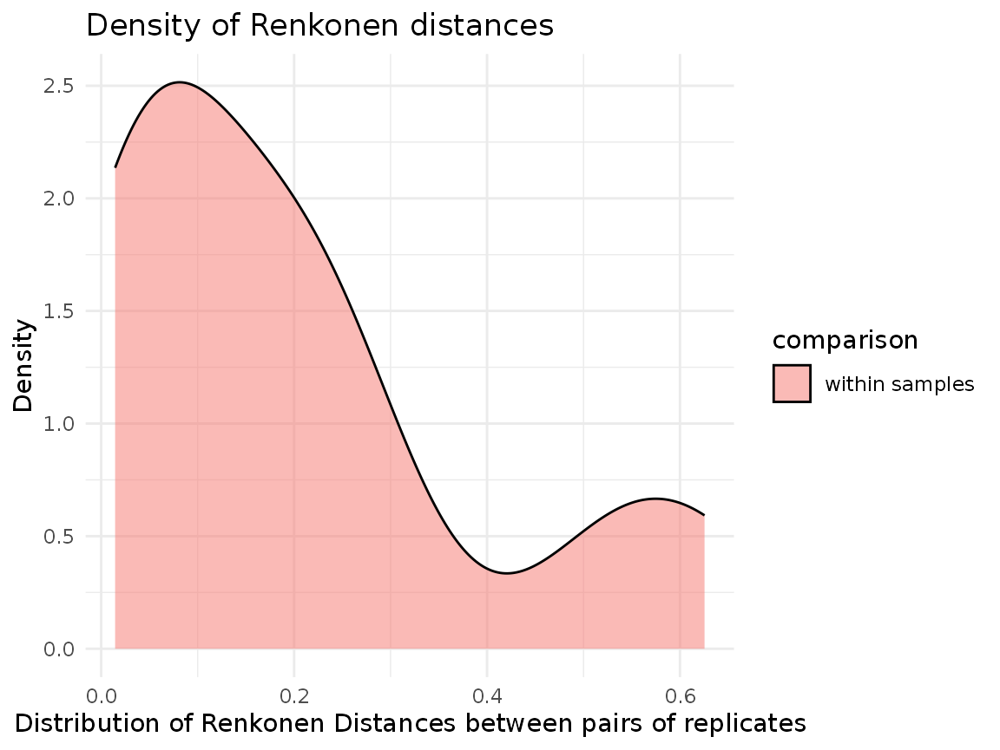
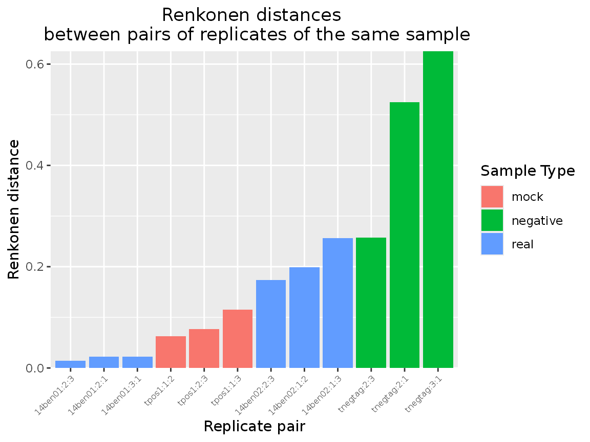
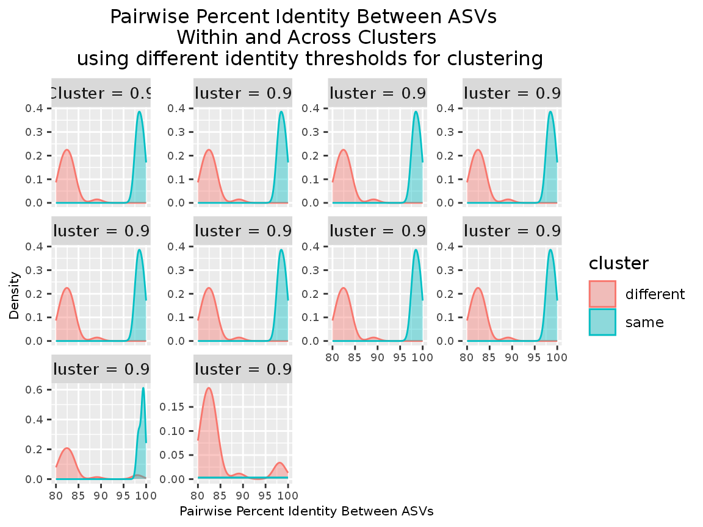
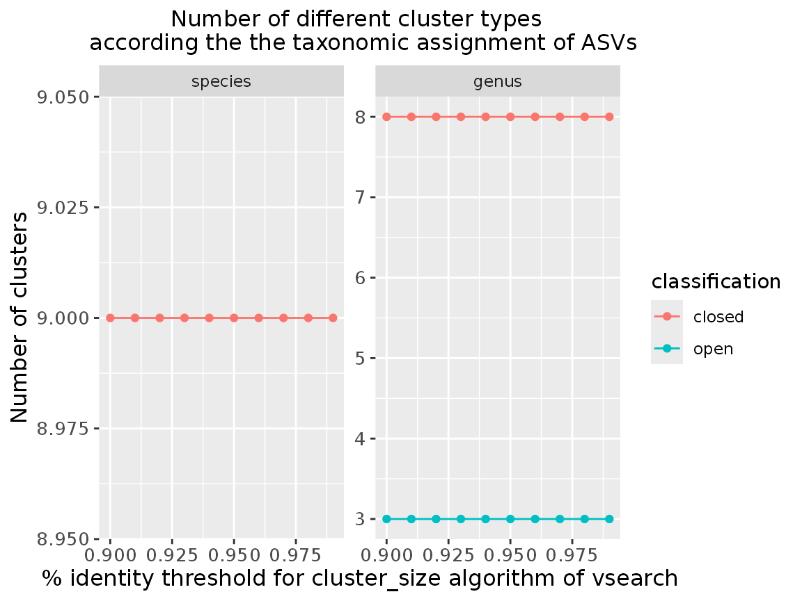

Package version: 2.0.0.9001
Set Paths to Third-Party Programs
Adjust path according to you installation, or leave this out, if external programs are in your path.
options(vtamR.vsearch_path = "C:/Users/Public/vsearch-2.23.0-win-x86_64/bin/vsearch")
options(vtamR.blast_path = "C:/Users/Public/blast-2.16.0+/bin/blastn")
options(vtamR.cutadapt_path = "C:/Users/Public/cutadapt")
options(vtamR.swarm_path = "C:/Users/Public/swarm-3.1.5-win-x86_64/bin/swarm")
options(vtamR.pigz_path = "C:/Users/Public/pigz-win32/pigz")
## Load Library
library(vtamR)
library(dplyr)
#>
#> Attaching package: 'dplyr'
#> The following objects are masked from 'package:stats':
#>
#> filter, lag
#> The following objects are masked from 'package:base':
#>
#> intersect, setdiff, setequal, union
## Demo dataset
fastq_dir <- system.file("extdata/demo/fastq", package = "vtamR")
fastqinfo <- system.file("extdata/demo/fastqinfo_mfzr_plate1.csv", package = "vtamR")
mock_ncbi_fasta <- system.file("extdata/demo/mock_ncbi.fasta", package = "vtamR")
asv_list <- system.file("extdata/demo/asv_list.csv", package = "vtamR")
taxonomy <- system.file("extdata/db_test/taxonomy_reduced.tsv", package = "vtamR")
blast_db <- system.file("extdata/db_test", package = "vtamR")
blast_db <- file.path(blast_db, "COInr_reduced")
### Check the Format of Input Files
check_file_info(file = fastqinfo, dir = fastq_dir, file_type = "fastqinfo")
#> [1] "Sample names are alphanumerical : OK"
#> [1] "Only IUPAC characters in tag_fw: OK"
#> [1] "Only IUPAC characters in tag_rv: OK"
#> [1] "Only IUPAC characters in primer_fw: OK"
#> [1] "Only IUPAC characters in primer_rv: OK"
#> [1] "Coherence between samples and sample_type: OK"
#> [1] "Coherence between samples and habitat: OK"
#> [1] "sample_type: OK"
#> [1] "Coherence between samples and replicates: OK"
#> [1] "File extension: OK"
#> [1] "Coherence between fw and rv fastq filename: OK"
#> [1] "Unique tag combinations : OK"
check_file_info(file = asv_list, file_type = "asv_list")
#> [1] "Only IUPAC characters in ASV: OK"
#> [1] "1 to 1 relation between asv_id and asv : OK"
## Output directory and log file
outdir <- file.path("vtamR_demo_out", "QuickStart_mfzr_plate1")
options(vtamR.log_file = file.path(outdir, "run_info", "vtamR_log.csv"))
# Pre-process reads
## Demultiplex
demultiplexed_dir <- file.path(outdir, "1_demultiplexed")
fastqinfo_df <- demultiplex_and_trim_fastq(
fastqinfo = fastqinfo,
fastq_dir = fastq_dir,
outdir = demultiplexed_dir,
primer_to_end = FALSE,
check_reverse = TRUE,
compress = FALSE
)
## Randomly subsample sequencing reads
randomseq_dir <- file.path(outdir, "2_random_sampled")
fastqinfo_df <- random_sample_batch_by(
info = fastqinfo_df,
by = "replicate",
dir = demultiplexed_dir,
outdir = randomseq_dir,
N = 40000,
compress = FALSE
)
#> Warning in random_sample_fastq(fastq1 = file.path(dir, files[i, "fastq_fw"]), : vtamR_demo_out/QuickStart_mfzr_plate1/1_demultiplexed/tpos1-1_fw.fastq contains 22074 records. Input file pair is copied to output.
#> Warning in random_sample_fastq(fastq1 = file.path(dir, files[i, "fastq_fw"]), : vtamR_demo_out/QuickStart_mfzr_plate1/1_demultiplexed/tnegtag-1_fw.fastq contains 57 records. Input file pair is copied to output.
#> Warning in random_sample_fastq(fastq1 = file.path(dir, files[i, "fastq_fw"]), : vtamR_demo_out/QuickStart_mfzr_plate1/1_demultiplexed/14ben01-1_fw.fastq contains 7258 records. Input file pair is copied to output.
#> Warning in random_sample_fastq(fastq1 = file.path(dir, files[i, "fastq_fw"]), : vtamR_demo_out/QuickStart_mfzr_plate1/1_demultiplexed/14ben02-1_fw.fastq contains 7398 records. Input file pair is copied to output.
#> Warning in random_sample_fastq(fastq1 = file.path(dir, files[i, "fastq_fw"]), : vtamR_demo_out/QuickStart_mfzr_plate1/1_demultiplexed/tpos1-2_fw.fastq contains 27801 records. Input file pair is copied to output.
#> Warning in random_sample_fastq(fastq1 = file.path(dir, files[i, "fastq_fw"]), : vtamR_demo_out/QuickStart_mfzr_plate1/1_demultiplexed/tnegtag-2_fw.fastq contains 259 records. Input file pair is copied to output.
#> Warning in random_sample_fastq(fastq1 = file.path(dir, files[i, "fastq_fw"]), : vtamR_demo_out/QuickStart_mfzr_plate1/1_demultiplexed/14ben01-2_fw.fastq contains 7370 records. Input file pair is copied to output.
#> Warning in random_sample_fastq(fastq1 = file.path(dir, files[i, "fastq_fw"]), : vtamR_demo_out/QuickStart_mfzr_plate1/1_demultiplexed/14ben02-2_fw.fastq contains 4496 records. Input file pair is copied to output.
## Merge Fastq Pairs and Quality Filter {#merge}
merged_dir <- file.path(outdir, "3_merged")
sampleinfo_df <- merge_fastq_pairs(
fastqinfo = fastqinfo_df,
fastq_dir = randomseq_dir,
outdir = merged_dir,
fastq_maxee = 1,
fastq_maxns = 0,
fastq_allowmergestagger = T
)
## Dereplicate
outfile <- file.path(outdir, "4_filter", "1_before_filter.csv")
updated_asv_list <- file.path(outdir, "ASV_list_with_IDs.csv")
read_count_df <- dereplicate(
sampleinfo = sampleinfo_df, # input df (output of demultiplex_and_trim_fasta)
dir = merged_dir, # directory with input fasta files
outfile = outfile, # write the output data frame to this file
input_asv_list = asv_list
)
# Filtering
## Initialize stat data frame
stat_df <- get_stat(read_count_df, stat_df = NULL, stage = "input", params = NA)
## Denoising with SWARM {#denoise}
split_clusters <- TRUE
by_sample <- TRUE
outfile <- file.path(outdir, "4_filter", "2_swarm_denoise.csv")
read_count_df <- denoise_by_swarm(
read_count = read_count_df,
outfile=outfile,
by_sample=by_sample,
split_clusters=split_clusters,
quiet=TRUE
)
param <- paste("by_sample:", by_sample, "split_clusters:", split_clusters, sep=" ")
stat_df <- get_stat(read_count_df, stat_df, stage="swarm_denoise", params=param)
## Filter ASVs
### Filter out ASVs with Low Total Read Count (`filter_asv_global`) {#filter_asv_global}
global_read_count_cutoff = 2
outfile <- file.path(outdir, "4_filter", "3_filter_asv_global.csv")
read_count_df <- filter_asv_global(
read_count = read_count_df,
outfile = outfile,
cutoff = global_read_count_cutoff
)
param <- paste("global_read_count_cutoff:", global_read_count_cutoff, sep=" ")
stat_df <- get_stat(read_count_df, stat_df, stage="filter_asv_global", params=param)
### Update the asv_list
updated_asv_list <- file.path(outdir, "updated_ASV_list_mfzr.csv")
update_asv_list(
asv_list1 = read_count_df,
asv_list2 = asv_list,
outfile = updated_asv_list)
### Filter ASVs Based on Read Length (`filter_indel`) {#filter_indel}
outfile <- file.path(outdir, "4_filter", "4_filter_indel.csv")
read_count_df <- filter_indel(
read_count = read_count_df,
outfile = outfile
)
stat_df <- get_stat(read_count_df, stat_df, stage="filter_indel", params=NA)
### Filter ASVs with Stop Codons (`filter_stop_codon`) {#filter_stop_codon}
outfile <- file.path(outdir, "4_filter", "5_filter_stop_codon.csv")
genetic_code = 5
read_count_df <- filter_stop_codon(
read_count = read_count_df,
genetic_code = genetic_code,
outfile = outfile
)
param <- paste("genetic_code:", genetic_code, sep=" ")
stat_df <- get_stat(read_count_df, stat_df, stage="filter_stop_codon", params=param)
### Filter Potential Contaminant ASVs (`filter_contaminant`) {#filter_contaminant}
outfile <- file.path(outdir, "4_filter", "6_filter_contaminant.csv")
conta_file <- file.path(outdir, "4_filter", "potential_contaminants.csv")
read_count_df <- filter_contaminant(
read_count = read_count_df,
sampleinfo = sampleinfo_df,
conta_file = conta_file,
outfile = outfile
)
stat_df <- get_stat(read_count_df, stat_df, stage="filter_contaminant", params=NA)
### Filter Chimeric ASVs (`filter_chimera`) {#filter_chimera}
outfile <- file.path(outdir, "4_filter", "7_filter_chimera.csv")
abskew=2
by_sample = TRUE
sample_prop = 0.8
read_count_df <- filter_chimera(
read_count = read_count_df,
outfile = outfile,
by_sample = by_sample,
sample_prop = sample_prop,
abskew = abskew
)
param <- paste("by_sample:", by_sample, "sample_prop:", sample_prop, "abskew:", abskew, sep=" ")
stat_df <- get_stat(read_count_df, stat_df, stage="filter_chimera", params=param)
## Filter Aberrant Replicates (`filter_replicate`) {#filter_replicate}
renkonen_within_df <- compute_renkonen_distances(
read_count = read_count_df,
compare_all = FALSE)
### Visualize Renkonen Distances
plot_renkonen_distance_density(
df = renkonen_within_df)
plot_renkonen_distance_barplot(
df = renkonen_within_df,
sampleinfo = sampleinfo_df,
x_axis_label_size = 6
)
### Determine Cutoff for Replicate Filtering
outfile <- file.path(outdir, "4_filter", "8_filter_replicate.csv")
renkonen_distance_quantile <- 0.9
read_count_df <- filter_replicate(
read_count = read_count_df,
outfile = outfile,
renkonen_distance_quantile = renkonen_distance_quantile
)
#> [1] "The cutoff value for Renkonen distances is 0.25736835614749"
param <- paste("renkonen_distance_quantile:", renkonen_distance_quantile, sep=" ")
stat_df <- get_stat(read_count_df, stat_df, stage="filter_replicate", params=param)
## Create `mock_composition` File {#match_variants_to_mock_species}
outdir_mock <- file.path(outdir, "mock_composition")
mock_template <- match_variants_to_mock_species(
read_count = read_count_df,
fas = mock_ncbi_fasta, # fasta with reference sequences on the mock or closely related species
taxonomy = taxonomy,
sampleinfo = sampleinfo_df,
outdir = outdir_mock
)
mock_composition <- file.path(outdir_mock, "mock_composition_template_to_check.csv")
mock_composition_df <- read.csv(mock_composition)
## Filter occurrences
### Filter Low-Abundance Occurrences within Samples (`filter_occurrence_sample`) {#filter_occurrence_sample}
outfile = file.path(outdir, "4_filter", "suggest_parameters", "sample_cutoff.csv")
suggest_sample_cutoff_df <- suggest_sample_cutoff(
read_count = read_count_df,
mock_composition = mock_composition,
outfile = outfile
)
#### Filter Low-Abundance Occurrences within Samples
sample_cutoff <- 0.004
outfile <- file.path(outdir, "4_filter", "9_filter_occurrence_sample.csv")
read_count_df <- filter_occurrence_sample(
read_count = read_count_df,
cutoff = sample_cutoff,
outfile = outfile
)
param <- paste("cutoff:", sample_cutoff, sep=" ")
stat_df <- get_stat(read_count_df, stat_df, stage="filter_occurrence_sample", params=param)
### Filter Occurrences by Replicate Consistency (filter_min_replicate-1) {#filter_min_replicate-1}
min_replicate_number <- 2
outfile <- file.path(outdir, "4_filter", "10_filter_min_replicate.csv")
read_count_df <- filter_min_replicate(
read_count = read_count_df,
cutoff = min_replicate_number,
outfile = outfile
)
param <- paste("cutoff:", min_replicate_number, sep=" ")
stat_df <- get_stat(read_count_df, stat_df, stage="filter_min_replicate", params=param)
### Filter Low-Abundance Occurrences (`filter_occurrence_variant` and `filter_occurrence_read_count`) {#filter_occurrence_variant}
outdir_suggest = file.path(outdir, "4_filter", "suggest_parameters")
suggest_variant_readcount_cutoffs_df <- suggest_variant_readcount_cutoffs(
read_count = read_count_df,
mock_composition = mock_composition,
sampleinfo = sampleinfo_df,
outdir = outdir_suggest,
min_replicate_number = 2
)
#### Apply `filter_occurrence_variant` and `filter_occurrence_read_count` {#filter_occurrence_read_count}
outfile <- file.path(outdir, "4_filter", "11_filter_occurrence_variant.csv")
variant_cutoff = 0.001
read_count_df_variant <- filter_occurrence_variant(
read_count = read_count_df,
cutoff = variant_cutoff,
outfile = outfile
)
param <- paste("cutoff:", variant_cutoff, sep=" ")
stat_df <- get_stat(read_count_df_variant, stat_df, stage="filter_occurrence_variant", params=param)
read_count_cutoff <- 10
outfile <- file.path(outdir, "4_filter", "12_filter_occurrence_read_count.csv")
read_count_df_rc <- filter_occurrence_read_count(
read_count = read_count_df,
cutoff = read_count_cutoff,
outfile = outfile
)
param <- paste("cutoff:", read_count_cutoff, sep=" ")
stat_df <- get_stat(read_count_df_rc, stat_df, stage="filter_occurrence_read_count", params=param)
outfile <- file.path(outdir, "4_filter", "13_pool_filters.csv")
read_count_df <- pool_filters(
read_count_df_rc,
read_count_df_variant,
outfile=outfile
)
stat_df <- get_stat(read_count_df, stat_df, stage="pool_filters", params=NA)
# delete temporary data frames
rm(read_count_df_rc)
rm(read_count_df_variant)
### Filter Occurrences by Replicate Consistency (`filter_min_replicate`-2) {#filter_min_replicate-2}
min_replicate_number <- 2
outfile <- file.path(outdir, "4_filter", "14_filter_min_replicate.csv")
read_count_df <- filter_min_replicate(
read_count = read_count_df,
cutoff = min_replicate_number,
outfile = outfile
)
param <- paste("cutoff:", min_replicate_number, sep=" ")
stat_df <- get_stat(read_count_df, stat_df, stage="filter_min_replicate_2", params=param)
## Pool Replicates {#pool_replicates}
outfile <- file.path(outdir, "4_filter", "15_pool_replicates.csv")
read_count_sample_df <- pool_replicates(
read_count = read_count_df,
method = "mean", # Aggregate replicates using the mean read count
outfile = outfile
)
## Performance Metrics {#performance-metrics}
false_negatives <- file.path(outdir, "4_filter", "false_negatives.csv")
performance_metrics <- file.path(outdir, "4_filter", "performance_metrics.csv")
known_occurrences <- file.path(outdir, "4_filter", "known_occurrences.csv")
results <- classify_control_occurrences(
read_count = read_count_sample_df,
sampleinfo = sampleinfo_df,
mock_composition = mock_composition,
known_occurrences = known_occurrences,
false_negatives = false_negatives,
performance_metrics = performance_metrics)
# give explicit names to the 3 output data frames
known_occurrences_df <- results[[1]]
false_negatives_df <- results[[2]]
performance_metrics_df <- results[[3]]
## Print Summary Statistics {#print_stats}
write.csv(stat_df, file = file.path(outdir, "run_info", "summary.csv"))
# Taxonomic Assignment
outfile <- file.path(outdir, "4_filter", "assign_taxonomy_ltg.csv")
asv_tax <- assign_taxonomy_ltg(
asv = read_count_sample_df,
taxonomy = taxonomy,
blast_db = blast_db,
outfile = outfile)
# Clustering (mOTUs) {#cluster_asv}
### Plot Pairwise Identity Distribution
outfile <- file.path(outdir, "5_cluster", "pairwise_identities_vsearch.csv")
plotfile <- file.path(outdir, "5_cluster", "plot_pairwise_identity_vsearch.png")
plot_vsearch <- plot_pairwise_identity_vsearch(
read_count = read_count_sample_df,
identity_min = 0.9,
identity_max = 0.99,
identity_increment = 0.01,
min_id = 0.8,
outfile = outfile,
plotfile = plotfile)
print(plot_vsearch)
### Classify Clusters Based On Taxonomy
outfile <- file.path(outdir, "5_cluster", "classification_vsearch.csv")
plotfile <- file.path(outdir, "5_cluster", "plot_cluster_classification_vsearch.png")
scatterplot_vsearch <- plot_cluster_classification(
read_count = read_count_sample_df,
taxa = asv_tax,
clustering_method = "vsearch",
cluster_params = c(0.90, 0.91, 0.92, 0.93, 0.94, 0.95, 0.96, 0.97, 0.98, 0.99),
taxlevels = c("species", "genus"),
outfile = outfile,
plotfile = plotfile)
print(scatterplot_vsearch)
## Cluster ASVs into mOTUs
outfile <- file.path(outdir, "5_cluster", "16_mOTU_vsearch.csv")
identity <- 0.97
read_count_samples_df_ClusterSize <- cluster_asv(
read_count = read_count_sample_df,
method = "vsearch",
identity = 0.97,
group = TRUE,
by_sample = FALSE,
outfile = outfile)
stat_df <- get_stat(read_count_samples_df_ClusterSize,
stat_df,
stage="cluster_asv_vsearch",
param=identity)
# Output
## ASV table {#write_asv_table}
outfile=file.path(outdir, "motu_table_taxa.csv")
asv_table_df <- write_asv_table(
read_count = read_count_sample_df,
outfile = outfile,
asv_tax = asv_tax,
sampleinfo = sampleinfo_df,
add_empty_samples = FALSE,
add_sums_by_sample = TRUE,
add_sums_by_asv = TRUE,
add_expected_asv = TRUE,
mock_composition = mock_composition)
## Convert output to a `phyloseq` object{#phyloseq}
# Create a data frame containing sample metadata
samples <- sampleinfo_df %>%
select(sample, sample_type, habitat) %>%
distinct()
phy_object <- format_for_phyloseq(
otu = read_count_sample_df,
tax = asv_tax,
samples = samples,
outfile = file.path(outdir, "phyloseq", "phyloseq.rds")
)
## Convert output for the `vegan` package{#vegan}
vegan_dfs <- format_for_vegan(
otu = read_count_sample_df,
tax = asv_tax,
sample_type = sampleinfo_df,
rm_coltrol = TRUE,
outfile_motu = file.path(outdir, "vegan", "motu_table_vegan.csv"),
outfile_taxa = file.path(outdir, "vegan", "tax_table_vegan.csv")
)
vegan_motu_df <- vegan_dfs[[1]]
vegan_tax_df <- vegan_dfs[[2]]
# Document your workflow
## Record R and package versions{#package-versions}
package_versions <- file.path(outdir, "run_info", "R_package_versions.csv")
collect_package_info(package_versions)
## MIEM
miem_dir <- file.path(outdir, "run_info", "MIEM")
miem_bioinformatics(
r_versions = package_versions,
outfile = file.path(miem_dir, "MIEM_bioinfo.csv")
)
#> Warning in miem$Information[i] <- text: number of items to replace is not a
#> multiple of replacement length
## MIEM Sequencing Summary
info_files = c(
fastqinfo,
file.path(outdir, "1_demultiplexed/fastqinfo.csv"),
file.path(outdir, "2_random_sampled/fastqinfo.csv"),
file.path(outdir, "3_merged/fastainfo.csv")
)
read_count_files = c(
file.path(outdir, "4_filter/1_before_filter.csv"),
file.path(outdir, "4_filter/2_swarm_denoise.csv"),
file.path(outdir, "4_filter/14_filter_min_replicate.csv"),
file.path(outdir, "4_filter/15_pool_replicates.csv"),
file.path(outdir, "5_cluster/16_mOTU_vsearch.csv")
)
taxa = file.path(outdir, "4_filter/assign_taxonomy_ltg.csv")
miem_results(
info_files = info_files,
fastq_dir = fastq_dir,
read_count_files = read_count_files,
taxa = taxa,
outdir = miem_dir,
mock_composition = mock_composition
)